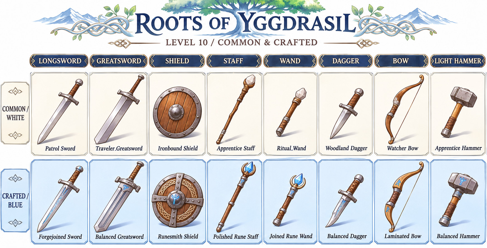
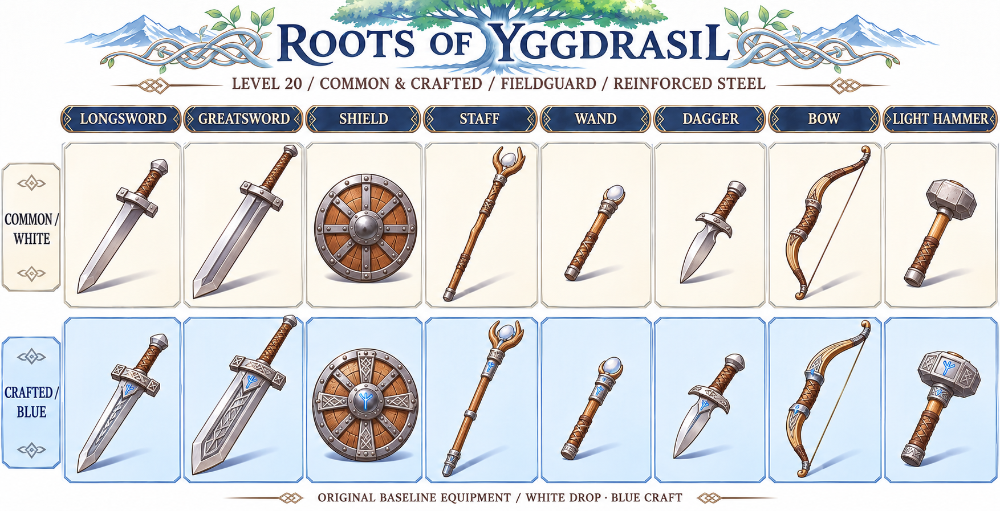
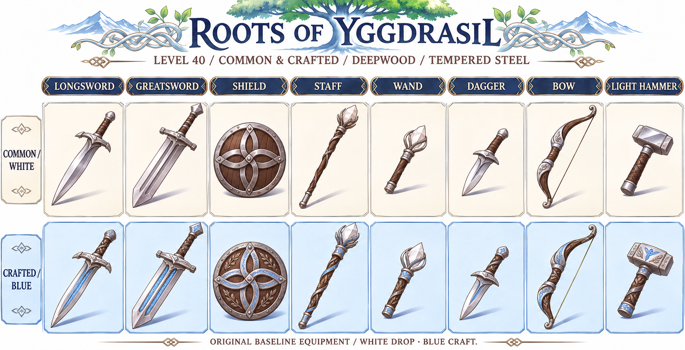
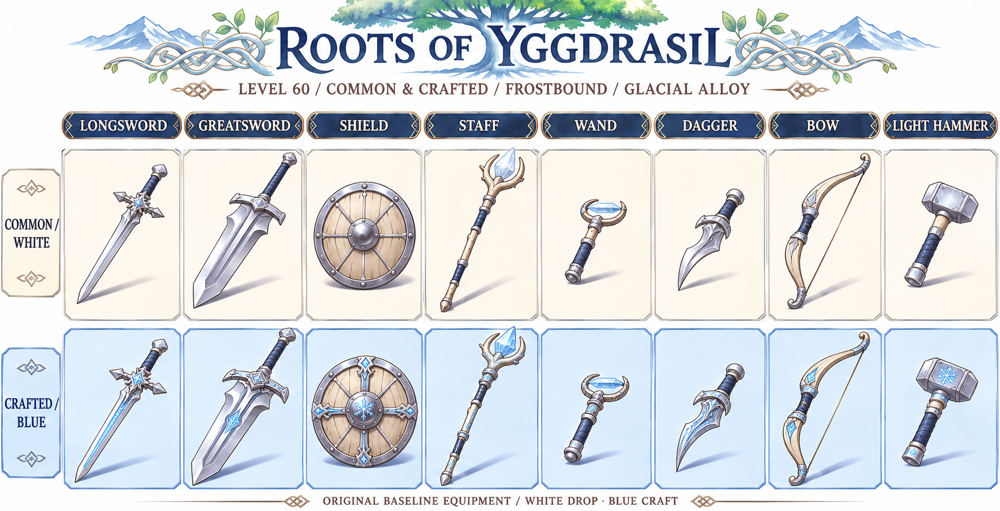
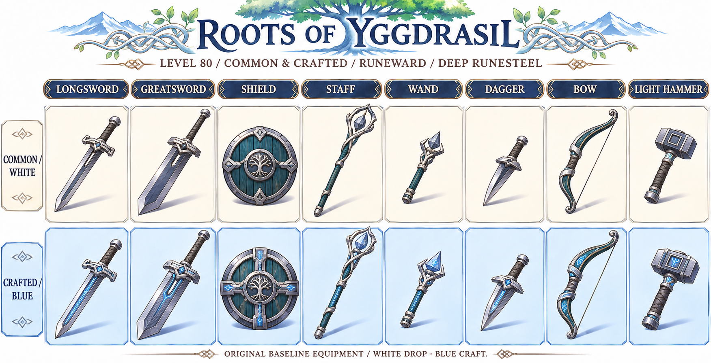
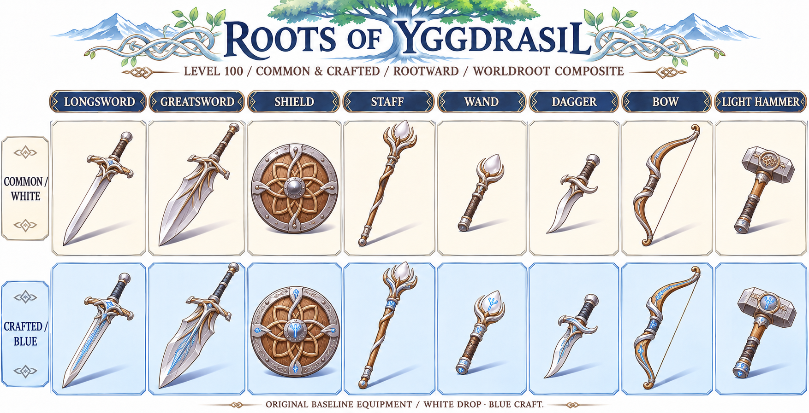

ROOTS OF YGGDRASIL · อุปกรณ์พื้นฐาน Lv.10–100
ขาวดรอปทั่วไป · ฟ้าพ่อค้าคราฟ · 6 รุ่น × 8 ประเภท × 2 สี = 96 รายการ
เฉพาะงานออกแบบ ไม่รวมทอง/แดง ไม่ใช่ไอเท็มที่เปิดใช้ในเกมแล้ว
รายละเอียด · CSV · JSON
Lv.10 · ผู้เริ่มเดินทาง
เหล็กพื้นฐาน ไม้ทั่วไป หนังฟอก หินเวทดิบ

ชื่อและรูปทรงทั้ง 16 รายการ
| ประเภท | ขาว | ฟ้า |
|---|
| ดาบยาวมือเดียว | ดาบลาดตระเวน | ดาบเหล็กตีประสาน |
| ดาบใหญ่สองมือ | ดาบใหญ่ผู้เดินทาง | ดาบใหญ่เหล็กถ่วงสมดุล |
| โล่ | โล่ไม้หุ้มเหล็ก | โล่เหล็กช่างรูน |
| ไม้เท้าสองมือ | ไม้เท้าผู้ฝึกเวท | ไม้เท้ารูนขัดเงา |
| คทามือเดียว | คทาผู้เริ่มพิธี | คทารูนประสาน |
| มีดสั้น | มีดสั้นเดินป่า | มีดสั้นเหล็กสมดุล |
| ธนู | ธนูไม้ผู้เฝ้าป่า | ธนูไม้ประสาน |
| ค้อนเล็ก | ค้อนช่างฝึกหัด | ค้อนเหล็กถ่วงสมดุล |
Lv.20 · ผู้เฝ้าชายแดน
เหล็กกล้า ไม้แอช หนังเย็บเสริม หินเวทเจียระไนขั้นต้น

ชื่อและรูปทรงทั้ง 16 รายการ
| ประเภท | ขาว | ฟ้า |
|---|
| ดาบยาวมือเดียว | ดาบทหารชายแดน | ดาบเหล็กย้ำคม |
| ดาบใหญ่สองมือ | ดาบใหญ่ลาดตระเวน | ดาบใหญ่สมดุลชายแดน |
| โล่ | โล่เฝ้าด่าน | โล่ประสานชายแดน |
| ไม้เท้าสองมือ | ไม้เท้าแอช | ไม้เท้าแอชจารึกรูน |
| คทามือเดียว | คทาแอช | คทาแอชฝังผลึก |
| มีดสั้น | มีดสั้นเหล็กกล้า | มีดสั้นคมประสาน |
| ธนู | ธนูแอชเสริมแรง | ธนูแอชไม้ซ้อน |
| ค้อนเล็ก | ค้อนเหล็กแปดเหลี่ยม | ค้อนสมดุลแปดเหลี่ยม |
Lv.40 · เหล็กกล้าพงลึก
เหล็กกล้าชุบแข็ง ไม้เหล็กสีเข้ม ควอตซ์ เส้นใยทนแรง

ชื่อและรูปทรงทั้ง 16 รายการ
| ประเภท | ขาว | ฟ้า |
|---|
| ดาบยาวมือเดียว | ดาบใบพฤกษา | ดาบใบพฤกษาจารึกรูน |
| ดาบใหญ่สองมือ | ดาบใหญ่ร่องคู่ | ดาบใหญ่ร่องคู่ตีชั้น |
| โล่ | โล่ไม้เหล็ก | โล่ปมไม้เหล็ก |
| ไม้เท้าสองมือ | ไม้เท้าพฤกษาวน | ไม้เท้าพฤกษารูน |
| คทามือเดียว | คทาควอตซ์ | คทาควอตซ์กรอบเงิน |
| มีดสั้น | มีดสั้นหยดเหล็ก | มีดสั้นหยดเหล็กรูน |
| ธนู | ธนูไม้เหล็ก | ธนูไม้เหล็กประสาน |
| ค้อนเล็ก | ค้อนหน้าเฉียง | ค้อนหน้าเฉียงจารึกรูน |
Lv.60 · โลหะเหมันต์
โลหะผสมสีเงินเย็น ไม้เบิร์ช หนังน้ำเงินเข้ม ควอตซ์เย็น

ชื่อและรูปทรงทั้ง 16 รายการ
| ประเภท | ขาว | ฟ้า |
|---|
| ดาบยาวมือเดียว | ดาบเหมันต์ | ดาบเหมันต์ตีประสาน |
| ดาบใหญ่สองมือ | ดาบใหญ่เหล็กเย็น | ดาบใหญ่เหล็กเย็นจารึกรูน |
| โล่ | โล่เงินเหมันต์ | โล่รูนน้ำค้าง |
| ไม้เท้าสองมือ | ไม้เท้าเบิร์ชเหมันต์ | ไม้เท้าเบิร์ชรูนเย็น |
| คทามือเดียว | คทาผลึกน้ำแข็ง | คทาผลึกน้ำแข็งประสาน |
| มีดสั้น | มีดสั้นใบน้ำค้าง | มีดสั้นใบน้ำค้างขัดคม |
| ธนู | ธนูเบิร์ชเยือกแข็ง | ธนูเบิร์ชเสริมโลหะเย็น |
| ค้อนเล็ก | ค้อนเงินเหมันต์ | ค้อนเงินเหมันต์สมดุล |
Lv.80 · เหล็กรูนชั้นลึก
เหล็กรูนเทาคราม ไม้ครามเนื้อแน่น โลหะเงิน หนังเทา

ชื่อและรูปทรงทั้ง 16 รายการ
| ประเภท | ขาว | ฟ้า |
|---|
| ดาบยาวมือเดียว | ดาบเหล็กรูน | ดาบเหล็กรูนประสานชั้น |
| ดาบใหญ่สองมือ | ดาบใหญ่เหล็กรูน | ดาบใหญ่รูนประกบชั้น |
| โล่ | โล่ไม้คราม | โล่ปมรูนไม้คราม |
| ไม้เท้าสองมือ | ไม้เท้ารูนลึก | ไม้เท้ารูนลึกเข้าล็อก |
| คทามือเดียว | คทาปริซึม | คทาปริซึมประสาน |
| มีดสั้น | มีดสั้นสามเหลี่ยม | มีดสั้นสามเหลี่ยมจารึกรูน |
| ธนู | ธนูไม้ครามเสริมเหล็ก | ธนูไม้ครามตีประสาน |
| ค้อนเล็ก | ค้อนช่องรูน | ค้อนช่องรูนสมดุล |
Lv.100 · วัสดุประสานรากโลก
ไม้จากเขตรากโลก โลหะตีชั้นสีอ่อน หนังถ่าน แร่ประกายมุก

ชื่อและรูปทรงทั้ง 16 รายการ
| ประเภท | ขาว | ฟ้า |
|---|
| ดาบยาวมือเดียว | ดาบเหล็กรากโลก | ดาบรากโลกตีประสาน |
| ดาบใหญ่สองมือ | ดาบใหญ่ใบรากโลก | ดาบใหญ่ใบรากประสานชั้น |
| โล่ | โล่ไม้รากโลก | โล่รากสานช่างรูน |
| ไม้เท้าสองมือ | ไม้เท้ารากโลก | ไม้เท้ารากโลกสามประสาน |
| คทามือเดียว | คทาหยดมุก | คทาหยดมุกจารึกรูน |
| มีดสั้น | มีดสั้นใบรากโลก | มีดสั้นใบรากขัดคม |
| ธนู | ธนูไม้รากโลก | ธนูไม้รากโลกประสานชั้น |
| ค้อนเล็ก | ค้อนเหล็กแกนราก | ค้อนเหล็กแกนรากสมดุล |